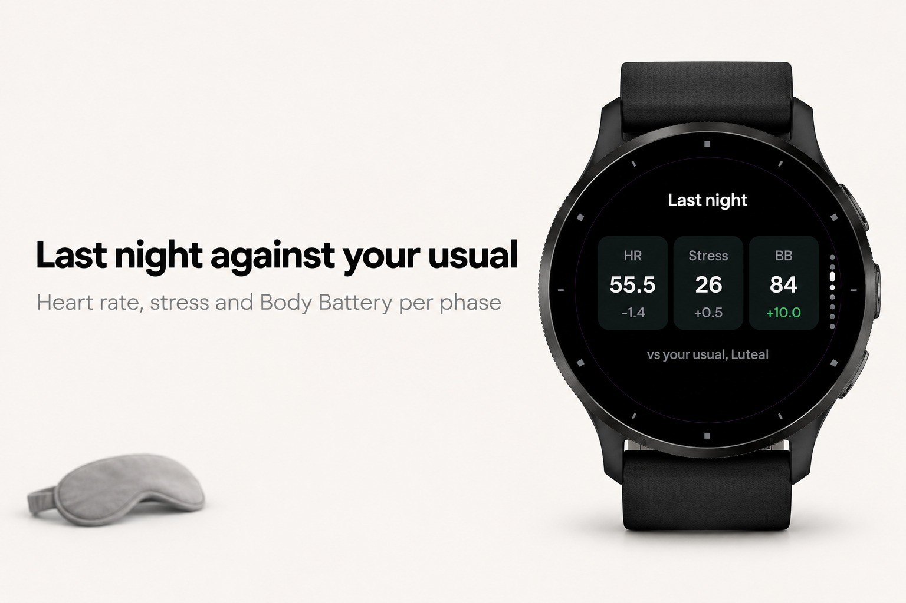
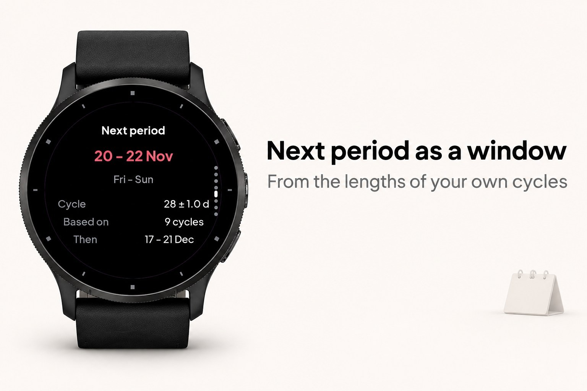
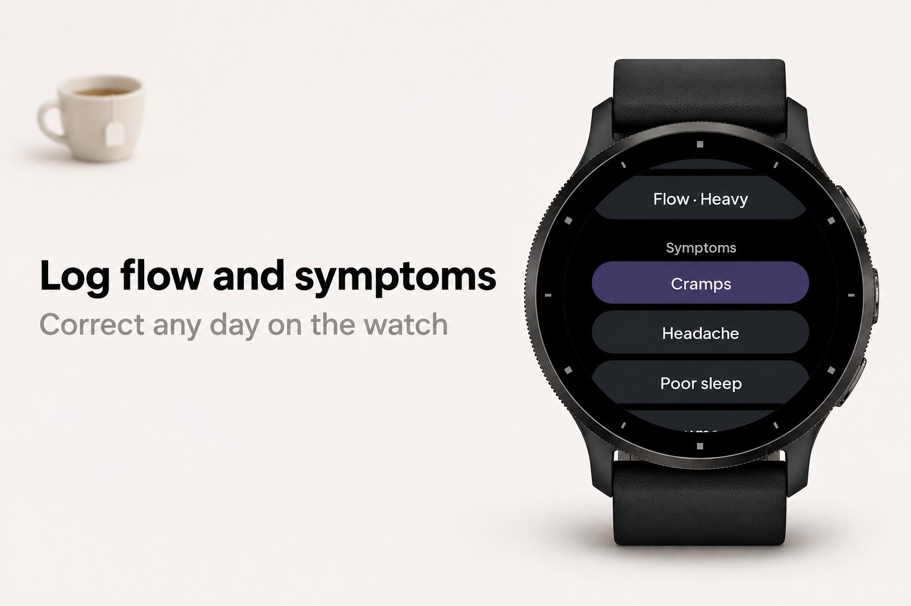
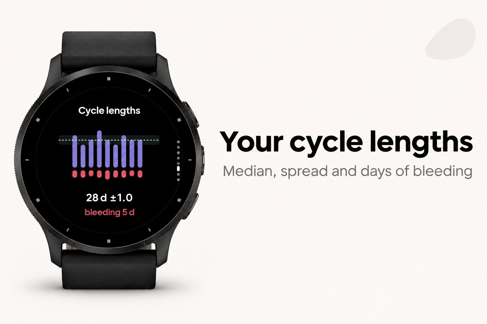

Cyra
Menstrual cycle and period tracker with training suggestions.





Cyra keeps your cycle on the watch and lets you correct every day of it right there: the first day, the last day, the flow, a period logged by mistake. Change it and the forecast recalculates at once. The next period is shown as a window, not a single date, worked out from the median and spread of your last twelve cycles, and it says how many cycles it rests on.
Phases are counted back from the expected next period, the way the luteal phase actually works, not forward from day 14. Each morning Cyra reads your night heart rate, stress and Body Battery from the watch's own history, compares them with what is usual for you in this phase, and suggests in plain words where hard work tends to suit you and where recovery may deserve more attention. A sustained rise in night temperature is used afterwards as an indication that the estimated phase was right.
What it does
- Today: cycle day, phase, days to the expected window and a one-line suggestion
- Log in two or three taps: period started, period ended, flow, and six symptoms
- Correct any day from the calendar ring, including the first day of the current and previous cycles; the model recomputes
- Forecast as an 80 % window with the number of cycles it is based on; no forecast until three cycles are logged
- History: cycle lengths with median and spread, and bleeding days per cycle
- Night numbers versus your usual for this phase, and a training suggestion based on your own history
- Night temperature or heart rate chart with the sustained rise marked, as an indication only
- Patterns: which symptoms return on which cycle days, and how night heart rate and Body Battery shift before a period
- Reminder a few days before the window, luteal length learned from your own data or set by hand
- Glance with cycle day and phase, five languages
What it needs
- Everything stays on the watch: no phone, no account, no internet
- Connect IQ apps cannot read or write the cycle data in Garmin Connect, so Cyra keeps its own log
- Night data needs the watch worn overnight; Connect IQ exposes no heart rate variability, so Garmin's stress value is used in its place
- Phases and windows are estimates from your own history. Not for contraception, not a diagnosis, not medical advice
Keywords: period tracker, menstrual cycle, menstruation, ovulation, cycle tracking, PMS, women's health, period calendar, cycle phases